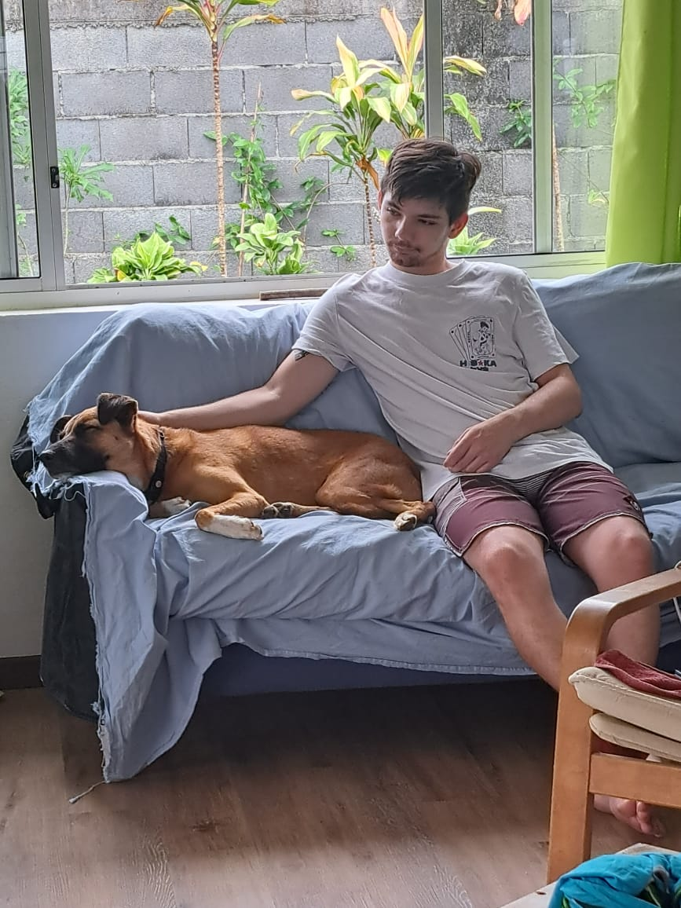

2022-2023
Baccalauréat STI2D (SIN), Lycée AMJ Uturoa.
Suite à mon stage en téléphonie IP à la Mairie de Mouans-Sartoux, je suis actuellement à la recherche d'une alternance pour ma 3ème année (orientée administration réseaux ou cybersécurité).
Télécharger mon CVPassionné par l'informatique, j'ai développé mes bases en autodidacte avant un Bac STI2D (SIN). Je poursuis en BUT Réseaux et Télécommunications. Après un stage enrichissant en téléphonie IP à la Mairie de Mouans-Sartoux, je suis à la recherche d'une alternance pour ma 3ème année (orientée réseaux/admin ou cybersécurité) afin de consolider mon expérience professionnelle.
Curieux de nature et autodidacte dans l'âme, j'ai choisi l'informatique pour construire mon propre univers technique.
Ce qui me passionne, c'est l'architecture : du code pur à la conception de réseaux robustes, j'aime comprendre comment les systèmes s'imbriquent.
Mon expérience en BUT et mon passage en collectivité m'ont appris à être autonome et débrouillard : j'aime chercher, tester et trouver des solutions par moi-même pour relever des défis techniques.
Quand je ne suis pas derrière un écran, je garde un pied dans le monde réel... et souvent dans l'eau ! Grand amateur de sports polynésiens comme le Va'a, j'aime l'effort physique et le dépassement de soi.
Issu d'une famille proche de la nature avec un père animalier, le soin et le contact avec les animaux font partie de mon équilibre.
Côté tech, je reste un bidouilleur : mon premier PC a été assemblé avec des pièces de récupération, une habitude qui m'a appris la valeur de chaque composant et l'importance du 'système D'.

Dès ma deuxième année de BUT, j'intègre le parcours Cybersécurité pour me former à la protection des données, la détection d'intrusions et la sécurisation des infrastructures critiques.
J'ai rejoint ce parcours car la sécurité sur internet est primordiale pour notre avenir.
Diagnostic avec Wireshark.
Outils Nmap et Nessus.
ACLs, VPN et protocoles.
Certification et protocoles Cisco.
VLANs, Trunking et STP.
RIP, OSPF et statique.
Étude de propagation et mesures RF.
Soudure et calculs de liaisons optiques.
Protocoles SIP/RTP et IPBX.
Gestion d'annuaires et stratégie.
Bash et services DHCP/DNS.
Conteneurisation et orchestration.
Programmation système.
Scripting et automatisation.
Scripting et automatisation.
Projets de sécurisation et analyse de vulnérabilités.
Scripts Python et sites web interactifs.
Confection et administration de réseaux locaux.
Étude des supports de transmission.
Projets personnels, interviews et activités extra-scolaires.
Certification réseau , Certifiaction Pentests , Certification developpement
Après un Bac STI2D option : Système d'Information et Numérique (SIN) obtenu avec mention, j'ai choisi le BUT R&T pour devenir expert en infrastructures sécurisées. Mon redoublement a été une opportunité pour renforcer mes bases et confirmer mon choix de parcours.
Baccalauréat STI2D (SIN), Lycée AMJ Uturoa.
1ère année BUT R&T - IUT de Nice.
2ème année BUT R&T, Spécialisation Cyber-sécurité. Stage en téléphonie IP à la Mairie de Mouans-Sartoux.
3ème année BUT R&T. Objectif : Alternance (Administration Réseaux ou Cyber-sécurité).